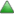
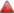
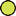
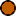

<div id="smap"></div>
<div id="smap-popup-container" class="smap-popup-container">
  <a href="#" id="smap-popup-closer" class="smap-popup-closer"></a>
  <div id="smap-popup-content" class="smap-popup-content"></div>
</div>
<div id="smap-tooltip-container" class="smap-tooltip-container"></div>
<div>
  <span class="knmi-legend">Legend:</span>
   Open Station /
   Closed Station
   Induced Earthquake /
   Tectonic Earthquake
</div>
